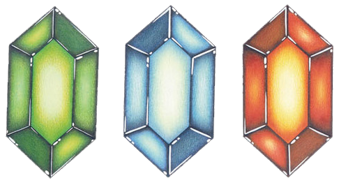

10 系统交叉——跨系统联动
核心问题
- ALttP 的七大子系统（世界设计、进度系统、地下城、表世界、战斗、谜题、经济、叙事）之间的交叉联动是如何产生的——哪些是设计者显式预设的"硬编码"路径，哪些是规则自然碰撞产生的涌现？
- 哪些系统交叉节点是整个游戏结构的关键枢纽——移除它们会导致最严重的连锁崩塌？
- "1+1>2"的系统交叉效应能否提炼为可迁移的设计方法论？
系统交叉映射
系统关系网络总览
系统关系网络：红色实线为强耦合（骨架），蓝色虚线为弱耦合（血肉）
七对核心系统交叉的详细标注
1. 世界设计 ←→ 进度系统 [强耦合]
| 交叉点 | 耦合性质 | 具体表现 |
|---|---|---|
| 物品能力决定可达区域 | 显式预设 | 每个核心物品精确对应一类地形障碍，构成区域解锁的"钥匙"体系 |
| 双世界放大物品的解锁价值 | 显式预设 | 同一件物品在 Light World 和 Dark World 各有独立的可解锁区域，单个物品的探索价值被倍增 |
| Moon Pearl 作为 Dark World 进度门 | 显式预设 | 无 Moon Pearl 则在 Dark World 变为兔子（丧失战斗/使用能力），强制玩家在进入 Dark World 前完成 Light World 全部地下城 |
| 传送点被物品能力封锁 | 显式预设 | Light→Dark 传送点被深色石头、悬崖等障碍遮挡，需要 Titan's Mitt、Hookshot 等物品才能到达 |
| 障碍前置-能力后置的记忆回路 | 显式预设 | 世界设计在玩家早期路径上布置可见但不可达的区域，物品获取后激活玩家的"障碍记忆"，驱动回溯探索 |
这是整个游戏中最核心的强耦合对。世界设计提供"去哪"的空间，进度系统提供"能不能去"的条件，两者共同构成了 ALttP 的探索脊柱。移除这对耦合，游戏退化为纯粹的线性关卡序列。
02 世界设计（区域可达性控制） 04 进度系统（物品即钥匙的设计哲学）
2. 地下城 ←→ 表世界 [强耦合]
| 交叉点 | 耦合性质 | 具体表现 |
|---|---|---|
| 地下城物品解锁表世界新路径 | 显式预设 | 这是宏循环的核心脊柱——地下城是"获取"场所，表世界是"使用"场所，两者互为因果 |
| 表世界隐藏洞穴给予地下城升级 | 显式预设 | 心之碎片、容量升级等散布在表世界的隐藏洞穴/支线中，反哺地下城挑战的容错空间 |
| 地下城入口需要表世界探索才能发现 | 显式预设 | 部分地下城入口隐藏在需要特定物品或双世界切换才能到达的位置 |
| Magic Mirror 在地下城内的跨世界谜题 | 显式预设 | 部分 Dark World 地下城需要切到 Light World 再返回来绕过障碍——地下城不再封闭，可达性依赖表世界地形 |
这对耦合使地下城和表世界绝非两个独立的游戏区域，而是互锁的齿轮。地下城产出能力，能力解锁表世界，表世界提供升级和入口，驱动下一个地下城——这个正反馈循环是 ALttP 宏循环的引擎。
01 核心循环（宏循环的四层嵌套结构） 03 地下城设计（地下城与表世界的双向驱动）

3. 进度系统 ←→ 战斗系统 [弱耦合]
| 交叉点 | 耦合性质 | 具体表现 |
|---|---|---|
| 新物品扩展战斗选项 | 规则自然延伸 | Hookshot 眩晕、Fire Rod 远程、Ice Rod 冻结——这些战斗效果是物品物理行为的自然推论，不是为每个敌人单独编写 |
| 剑/盾/防具升级改变战斗难度曲线 | 规则自然延伸 | 数值成长让后期战斗从容，但不改变"能不能过"的门槛——策略可以弥补装备不足 |
| Boss 战作为道具使用的综合考核 | 显式预设 | 这是弱耦合对中唯一的显式预设点——每个 Boss 要求特定道具组合，将进度考核嵌入战斗 |
这对耦合的关键特征是不对称：进度系统强烈影响战斗（新物品带来新战术），但战斗本身不直接决定进度。玩家可以靠策略弥补装备差距，战斗失败不会锁死进度路径。这种单向弱耦合保护了探索驱动的设计核心——战斗服务于探索，而非反过来。
04 进度系统（数值成长作为物品系统的辅助） 05 战斗系统（Boss 作为道具使用考核场）
4. 谜题 ←→ 战斗 [弱耦合]
| 交叉点 | 耦合性质 | 具体表现 |
|---|---|---|
| 谜题需要在敌人攻击下精确操作开关 | 规则自然延伸 | 当谜题房间包含敌人时，战斗压力和解谜操作自然重叠，不需要为每个房间写专门的"战斗解谜"代码 |
| 战斗遭遇包含谜题元素 | 规则自然延伸 | Ice Rod 冻结敌人 + Hammer 击碎——两个独立系统的规则碰撞产生了"战斗连招" |
| Boss 战作为最大的谜题-战斗交叉点 | 显式预设 | 每个 Boss 都是"用正确道具创造攻击窗口"的谜题，而非纯粹的数值比拼 |
这对耦合的有趣之处在于：它是从 09_元素协同 中"一物多用"设计自然生长出来的。当一个物品同时在谜题和战斗中有用（如 Hookshot），两个系统就开始交叉。这种交叉不是策划为每种场景单独编写的，而是物理行为的一致规则在不同语境下自然生效的结果。
06 谜题设计（Boss 战作为"教学→应用→精通"的精通阶段） 09 元素协同（物品在多系统中的协同分析）
5. 叙事 ←→ 世界设计 [强耦合]
| 交叉点 | 耦合性质 | 具体表现 |
|---|---|---|
| 双世界的视觉差异即叙事 | 显式预设 | Light World = 和平/希望，Dark World = 扭曲/邪恶——空间本身是叙事载体，不需要文本解释 |
| 空间叙事：玩家亲身穿梭感受对比 | 显式预设 | Kakariko Village 的安宁 vs Village of Outcasts 的破败，玩家不是被"告知"这个对比，而是"经历"这个对比 |
| "来晚一步"的叙事模式与世界设计结合 | 显式预设 | 玩家到达某处时发现 NPC 已被带走——叙事事件被编织进空间探索的流程中 |
| 双世界的存在为叙事转折提供物理载体 | 显式预设 | "被投入 Dark World"是叙事高潮，同时也是游戏机制的最大扩展——叙事转折和玩法扩展同步发生 |
这是叙事系统最优雅的交叉——它几乎不依赖文本，而是让空间本身讲故事。ALttP 的叙事驱动力中，来自"世界对比"的部分远大于来自"对话内容"的部分。
07 叙事结构（双世界作为叙事装置）
6. 经济 ←→ 战斗 [弱耦合]
| 交叉点 | 耦合性质 | 具体表现 |
|---|---|---|
| 药水和瓶子支撑战斗续航 | 规则自然延伸 | 瓶装回复药的存在让玩家在 Boss 战中有容错空间，但这是辅助性的——没有药水也能通关，只是更难 |
| 购买升级间接改变战斗难度 | 规则自然延伸 | 剑的锻造升级和防具升级改变伤害公式，但核心装备从地下城获取，经济只是加速器 |
这对耦合之所以是弱耦合，因为 ALttP 的经济系统被有意设计为"续航保险"而非"进度门票"。卢比不决定"能不能打赢"，只决定"打赢要费多少劲"。如果经济变成战斗的核心决定因素（不买装备就打不过），游戏的探索驱动本质将被破坏。
08 经济与资源（卢比作为续航保险的定位）
7. 经济 ←→ 探索 [弱耦合]
| 交叉点 | 耦合性质 | 具体表现 |
|---|---|---|
| 卢比购买道具和升级支撑探索 | 规则自然延伸 | 炸弹/箭矢购买、容量升级——经济让探索更顺畅，但不控制探索路径 |
| 心之碎片作为经济之外的第二探索奖励 | 显式预设 | 心之碎片散布在世界各处，提供独立于货币系统的收集动机 |
| 小游戏入场费消耗卢比 | 显式预设 | 钓鱼、赛马等小游戏提供心之碎片等独特奖励，但需要卢比入场 |
经济与探索的耦合是最弱的——它提供润滑而非驱动力。砍草掉落 1 卢比的微奖励层让"不知道去哪时的漫游"也有正反馈，但这层反馈太轻，不足以独立驱动探索。真正的探索驱动力来自"障碍记忆"（世界设计 ←→ 进度系统）和心之碎片的收集欲望。
08 经济与资源（微奖励层作为探索的底层润滑剂）

设计分析
1. 强耦合 vs 弱耦合的区分标准
强耦合的特征：
- 设计者为每种交叉场景单独编写了"物品 A 必须用在场景 B"的关系
- 每个获得弓的玩家都会遇到需要射击的开关——结果是确定性的
- 移除任何一个端点，另一端的体验会发生根本性改变（移除双世界，叙事失去核心载体）
弱耦合的特征：
- 交叉效果是独立规则在不同语境下自然碰撞产生的
- Ice Rod 冻结敌人 + Hammer 击碎——两个独立系统的规则组合，不是策划为每个敌人单独编写的
- 移除任何一个端点，另一端仍然可以独立运作（移除经济系统，战斗仍然完整——只是少了回复手段）
分布比例： 在七对系统交叉中，三对是强耦合（世界-进度、地下城-表世界、叙事-世界），四对是弱耦合（进度-战斗、谜题-战斗、经济-战斗、经济-探索）。强耦合对集中在线性骨架上（控制流程节奏），弱耦合对分布在非线性空间中（丰富体验层次）。
2. "1+1>2"的交叉放大效应
世界设计与进度系统的交叉产生了最显著的放大效应。用空间量化描述：
Light World 探索空间 = S_L
Dark World 探索空间 = S_D
双世界交叉探索空间 = S_X
玩家实际体验的探索总量 = S_L + S_D + S_X
其中 S_X 包含：
- "同一物品在两个世界各解锁一组区域"的倍增效应
- "世界切换作为探索工具"产生的跨世界绕路空间
- "Light World 空间知识在 Dark World 部分有效"的认知复用
结果：S_L + S_D + S_X >> 2 × S_L这个不等式的成立依赖于三个前提条件：
- 两个世界共享空间骨架但表层不同——认知复用使玩家不需要从零学习 Dark World
- 物品能力在两个世界都有使用场景——单个物品的价值被倍增
- 世界切换本身是探索工具——双世界的间隙是可探索空间
如果去掉这三个条件中的任何一个，S_X 将趋近于零，探索总量退化为 S_L + S_D = 2 × S_L（纯粹的"两个独立关卡"）。
3. 线性骨架上的非线性分支
ALttP 的系统交叉遵循一个统一的架构原则：用强耦合构建线性骨架，用弱耦合填充非线性分支。
线性骨架（强耦合控制）：
序章 → 三个挂坠地下城 → Hyrule Castle Tower →
Dark World 入口 → ... → Ganon's Tower
非线性空间（弱耦合填充）：
骨架之间的表世界探索
Dark World 地下城的部分自由排序
心之碎片/瓶子/升级的任意顺序收集
战斗策略的多样化选择这种架构的效果是：玩家感受不到线性约束的压迫感，因为骨架节点之间的空间足够广阔。但设计师始终在控制着情绪曲线——每个骨架节点都是一次"不可跳过"的体验（获得新物品、遭遇叙事转折、击败 Boss），确保所有玩家经历相同的核心节奏。
4. 关键枢纽节点识别
按"移除后产生的连锁崩塌严重程度"排序：
第一枢纽：物品即钥匙（世界设计 ←→ 进度系统的交叉核心）
这是整个游戏结构的承重墙。如果物品不再作为区域解锁的"钥匙"——例如所有区域从开始就可达——那么：
- 宏循环失去驱动引擎（没有"获得新能力→回去探索"的循环）
- "障碍记忆"机制失效（没有障碍就没有记忆）
- 地下城与表世界的双向驱动瓦解（地下城不再产出"钥匙"）
- 心之碎片等探索奖励失去可达性梯度（所有碎片从一开始就可达，收集变成纯粹的寻宝而非能力验证）
第二枢纽：地下城物品解锁表世界路径（地下城 ←→ 表世界的交叉核心）
如果地下城物品只在地下城内有用途，不能解锁表世界新区域：
- 玩家失去"出来后去哪"的方向感
- 表世界退化为从一个地下城入口走到下一个地下城入口的走廊
- 地下城之间的节奏缓冲消失（没有"用新能力探索"的放松阶段）
第三枢纽：双世界系统（世界设计 ←→ 叙事的交叉核心）
如果 Dark World 只是 Light World 的换皮版（视觉相同但敌人更强），不共享空间拓扑：
- 空间叙事消失（无法通过"同一地方被扭曲"表现叙事主题）
- 世界切换作为探索工具不复存在（无法在两个世界间策略性绕路）
- 认知复用失效（需要从零学习一个全新的地图）
第四枢纽：Boss 作为道具考核（进度 ←→ 战斗 ←→ 谜题的三路交叉）
如果所有 Boss 都可以纯用剑击败：
- Boss 战从"综合考核"退化为"数值比拼"
- 新物品的获取缺乏高潮验证
- 地下城的"教学→应用→精通"闭环无法收束
5. 系统交叉的生成机制
ALttP 的系统交叉有两种生成机制，对应 09_元素协同 中"显式预设 vs 规则自然延伸"的区分，但上升到系统层面：
机制 A：设计者显式编排的交叉路径
设计者明确编写了"获得物品 X → 解锁区域 Y"的映射关系。每个获得 Power Glove 的玩家都会搬起浅色石头，每个获得 Hookshot 的玩家都会遇到需要跨越的悬崖。这种交叉是确定性的、可预测的——它构成了游戏的"骨架"。
在七对系统交叉中，三对强耦合（世界-进度、地下城-表世界、叙事-世界）主要由机制 A 生成。
机制 B：独立规则碰撞产生的涌现交叉
设计者建立了少量一致的底层规则（"火焰点燃可燃物""冻结使对象定身""爆炸有范围判定"），这些规则在不同系统语境下自然碰撞。Ice Rod 的"冻结"规则（战斗系统）+ Hammer 的"砸碎冻结物"规则（谜题系统）= "冻结+击碎"的战斗连招（战斗-谜题交叉）。两个规则不需要知道彼此的存在。
在七对系统交叉中，四对弱耦合（进度-战斗、谜题-战斗、经济-战斗、经济-探索）主要由机制 B 生成。
机制 B 的效率优势： 如果设计者为每种系统交叉场景单独编写代码，N 个系统需要 N×(N-1)/2 对显式交叉代码。但基于一致的底层规则，设计者只需要编写 N 条独立规则，交叉效果自动产生。ALttP 的约 7 个子系统 × 约 15 种核心物品规则 = 最多 105 种系统-物品交叉，但设计者只需要维护约 7 个系统规则 + 约 15 个物品规则 = 22 条独立规则。
反事实推演
假设一：如果所有系统交叉都是强耦合（全部由机制 A 生成）
后果：
- 设计工作量爆炸。设计者需要为每种"物品×场景×系统"的组合逐一编写交叉关系，从 22 条独立规则膨胀到 100+ 条显式交叉代码
- 修改任何一个系统都需要逐一检查所有相关的显式交叉——维护成本急剧上升
- 玩家体验变得高度可预测——没有了"原来这两个东西可以组合使用"的惊喜感
- 游戏的涌现性消失。每个发现都是"设计者要我发现的"，而非"我自己发现的"
→ 结论：纯强耦合的系统交叉是"设计者替玩家玩游戏"。弱耦合（涌现交叉）的存在让玩家拥有"发现设计者没有预见到的东西"的快感。
假设二：如果所有系统交叉都是弱耦合（全部由机制 B 生成）
后果：
- 线性骨架消失。没有"必须按顺序获得三个挂坠"的硬约束，玩家可能在不理解基础系统的情况下闯入后期内容
- 叙事节奏失控。没有了强制的叙事节点（Agahnim 战、被投入 Dark World），故事变成散点式的事件集合，缺乏情绪曲线
- "教学→应用→精通"的教学链失去强制性。没有"获得物品 X 后必经的教学房间"，部分玩家可能跳过基础教学直接面对复杂场景
- 新手体验恶化。弱耦合依赖玩家自己发现规则组合，对缺乏实验精神的玩家而言可能意味着"什么都没发现就通关了"
→ 结论：纯弱耦合的系统交叉是"让玩家自己设计游戏"。强耦合（显式编排）的存在确保了所有玩家都经历核心体验的最低保障。
假设三：如果去掉世界设计 ←→ 进度系统的交叉（物品不再解锁区域）
这是最极端的推演。假设物品只在战斗和解谜中有用，不再作为区域解锁的"钥匙"。 后果：
- 宏循环的脊柱断裂。获得新物品后，玩家的第一反应从"我现在能去哪儿了"变为"这东西打怪有什么用"
- "障碍记忆"机制完全失效。表世界没有需要记忆的障碍，漫游变成无方向的游荡
- 地下城与表世界的双向驱动瓦解。地下城不再产出"钥匙"，表世界不再提供"去哪"的问题，两者变成平行的独立体验
- 双世界系统的价值大幅缩水。如果物品不控制区域可达性，Dark World 不是"逐步解锁的新世界"，而是"一进去就完全开放的区域"
- 游戏从"探索驱动冒险"退化为"战斗+解谜的线性关卡序列"
→ 结论：这对交叉是 ALttP 设计的承重墙。移除它对游戏结构的破坏超过移除任何其他系统交叉。
假设四：如果去掉弱耦合（只保留强耦合对）
假设只保留世界-进度、地下城-表世界、叙事-世界三对强耦合，移除所有弱耦合（战斗-谜题交叉、经济-战斗支撑等）。 后果：
- 游戏仍然"能玩"，核心循环仍然成立——地下城产出能力、能力解锁区域、叙事提供节奏
- 但体验变得单薄。战斗退化为纯粹的"砍到死"，没有道具策略。经济系统失去意义，因为药水不再有用。谜题和战斗完全分离，地下城变成"前半段解谜、后半段战斗"的割裂体验
- 物品失去多功能性。Hookshot 只能跨越悬崖（解谜），不能眩晕敌人（战斗），不能拉取远处道具（探索）——从枢纽物品退化为单一功能工具
- 重玩价值显著下降。没有了弱耦合带来的涌现策略空间，每次通关体验高度一致
→ 结论：强耦合决定游戏"能不能成立"，弱耦合决定游戏"有多精彩"。两者缺一不可，但角色不同。
可迁移经验
系统交叉的设计顺序应该是：
```
步骤1：确定强耦合对——哪些系统交叉必须存在才能让游戏成立？
→ 这些是骨架，必须最先设计、最坚固
步骤2：确定弱耦合对——哪些系统交叉可以产生涌现体验？
→ 这些是血肉，可以在骨架确立后逐步添加
步骤3：验证骨架的自洽性——移除任何弱耦合后，游戏是否仍然成立？
→ 如果不成立，说明弱耦合实际上是伪装的强耦合，需要重新分类
步骤4：在弱耦合中寻找"惊喜点"——哪些规则碰撞可能产生设计者没预见到的有趣交互？
→ 这些惊喜点是玩家"自己发现东西"的快感来源
```
ALttP 的骨架是三对强耦合（世界-进度、地下城-表世界、叙事-世界），血肉是四对弱耦合。移除任何一对弱耦合，游戏仍然成立——但移除任何一对强耦合，游戏结构将崩塌。这种"骨架可独立站立、血肉可逐步添加"的架构是可迁移的。
设计弱耦合时，不要逐一编码"在这个场景中系统 A 和系统 B 交叉"，而是建立一致的底层规则，让交叉作为规则的自然推论自动产生。
```
错误做法：为每种"战斗×解谜"场景单独编写交互代码
→ 150 种交互 = 150 个实现 = 维护噩梦
正确做法：建立"火焰点燃可燃物"和"冰冻使对象定身"等独立规则
→ 22 条规则 → 规则碰撞自动产生 105 种可能的交叉
→ 设计者不需要预见所有交叉，只需要确保规则本身一致
```
判断标准：如果修改一条规则（如"冻结持续时间从 3 秒改为 5 秒"）自动影响所有依赖该规则的交叉，说明你用的是规则驱动。如果需要逐一检查并修改多个场景，说明你用的是场景驱动——应该重构为规则驱动。
在所有系统交叉中识别枢纽节点——连接最多系统的交叉点——然后有意地将最大的设计投入集中在枢纽上。
ALttP 的第一枢纽是"物品即钥匙"（连接世界设计、进度系统、表世界、地下城四个系统）。这个枢纽获得了：
- 最精细的物品-障碍对应关系设计
- 最密集的"障碍前置-能力后置"的空间布局
- 双世界的倍增放大效应
识别枢纽的方法：对每对系统交叉，计算"如果移除这对交叉，多少个其他系统的体验会受损"。受损系统数量越多，枢纽权重越高。
强耦合构成线性骨架，确保所有玩家经历核心节奏。弱耦合填充非线性空间，让玩家在骨架之间自由漫游。
这个原则可以泛化为：任何需要"有节奏的自由感"的游戏，都应该区分"必须按顺序体验的节点"和"可以自由探索的空间"。节点之间通过强耦合锁死（玩家不能跳过），空间内部通过弱耦合丰富（玩家有多种路径和策略）。
```
节点（强耦合）：获得 Hookshot → 必须完成 Swamp Palace
空间（弱耦合）：在获得 Hookshot 之前，如何分配表世界探索时间？
→ 可以先找心之碎片、可以先刷卢比买药水、可以练习战斗技巧
→ 这些选择由弱耦合驱动，不同玩家有不同的最优路径
```
当两个系统交叉时，如果交叉产生的体验大于两个系统各自体验的简单相加，说明存在"交叉放大"。最可靠的放大器是空间复用——让同一份空间在两个系统的交叉中呈现不同的意义。
ALttP 的案例：Light World 的一片区域在进度系统中是"需要 Hookshot 才能到达的隐藏角落"，在叙事系统中是"被 Ganon 扭曲前 Kakariko 村庄的安宁回忆"。同一片空间承载了两个系统的意义，玩家对这片区域的情感投射被叠加。
寻找空间复用点的方法：列举每个系统在空间中的"意义注入点"，然后检查哪些点在物理空间上重叠。重叠处就是交叉放大的机会。
叙事与世界设计的交叉是所有耦合中成本最低的——它几乎不消耗任何内容资源。双世界的视觉差异本身就是叙事，不需要额外的对话、过场或文本。
这个手法可以泛化为：当需要传达"对比"主题时，让空间本身成为对比的载体。两个世界的视觉差异、两个时间段的氛围变化、两个状态的色彩对比——这些都比文本更高效，因为玩家是"亲身体验"而非"被告知"。
关键条件：对比必须是视觉上显著的。微妙的色调差异不足以构成空间叙事——ALttP 的做法是 Kakariko Village 到 Village of Outcasts 的"同一地方但完全不同"级别的冲击。
补充材料
补充材料
系统交叉矩阵（完整数据表）
| 世界设计 | 进度系统 | 地下城 | 表世界 | 战斗 | 谜题 | 经济 | 叙事 | |
|---|---|---|---|---|---|---|---|---|
| 世界设计 | — | 强 | — | 强 | — | — | — | 强 |
| 进度系统 | 强 | — | 强 | 强 | 弱 | 弱 | — | — |
| 地下城 | — | 强 | — | 强 | 弱 | 强 | — | — |
| 表世界 | 强 | 强 | 强 | — | — | — | 弱 | — |
| 战斗 | — | 弱 | 弱 | — | — | 弱 | 弱 | — |
| 谜题 | — | 弱 | 强 | — | 弱 | — | — | — |
| 经济 | — | — | — | 弱 | 弱 | — | — | — |
| 叙事 | 强 | — | — | — | — | — | — | — |
强耦合：7 条（显式预设，移除则崩塌） 弱耦合：8 条（规则涌现，移除则体验变薄）
强弱耦合的分布规律
观察矩阵可以发现一个规律：强耦合集中在"结构层"系统（世界、进度、地下城、叙事），弱耦合集中在"行为层"系统（战斗、经济、谜题）。
结构层系统定义"游戏是什么"——ALttP 是一个"用物品能力解锁世界区域的探索冒险游戏"，这个定义由结构层的强耦合对支撑。行为层系统定义"玩起来怎么样"——战斗策略有多丰富、资源管理有多深入、解谜有多有趣，这些由弱耦合对丰富。
这个规律的设计启示是：先设计结构层的强耦合（确定游戏身份），再添加行为层的弱耦合（丰富游戏体验）。如果反过来——先设计精彩的战斗系统，再试图将它与世界探索耦合——可能导致结构层不够坚固，游戏"好玩但不知道自己是什么"。